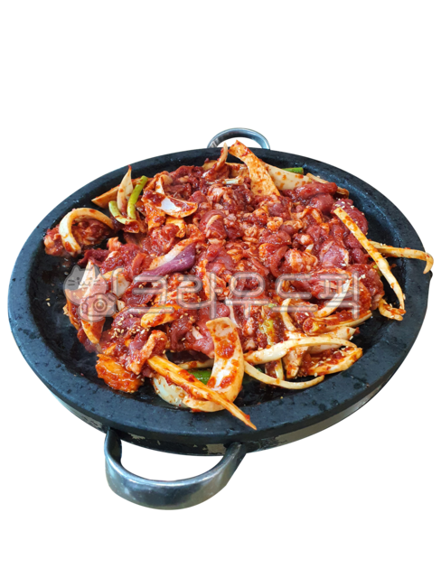

뚝배기 불고기
재료: 소고기(국내산), 양파(중국산), 대파(국내산), 당근(국내산),
팽이버섯(국내산), 콩나물(국내산), 생강(국내산산)
뚝배기 불고기의 특징
뜨겁게 달궈진 뚝배기에 담겨져 끝까지 온기를 유지하며 먹을 수 있는
요리입니다. 국물과 고기, 채소가 어우러진 따뜻한 한 끼 식사로
적합합니다.불고기 양념의 특유의 달콤 짭짤한 맛이 육수와 어우러져
감칠맛 나는 국물이 특징입니다. 국물이 자작하게 있어 밥과 함께 먹으면
더 맛있습니다.양파, 당근, 버섯, 콩나물 등이 들어가 고기와 함께 조화를
이루며, 영양이 풍부합니다. 당면을 넣으면 쫄깃한 식감이 추가되어 더욱
풍성한 맛을 즐길 수 있습니다.불고기 양념을 미리 만들어 두면 손쉽게
요리할 수 있지만, 뚝배기에 담아 내면 특별한 느낌을 줍니다. 가족
모임이나 손님 접대용으로도 적합한 요리입니다.